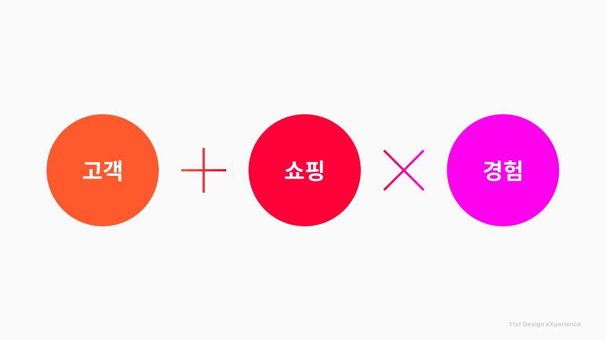
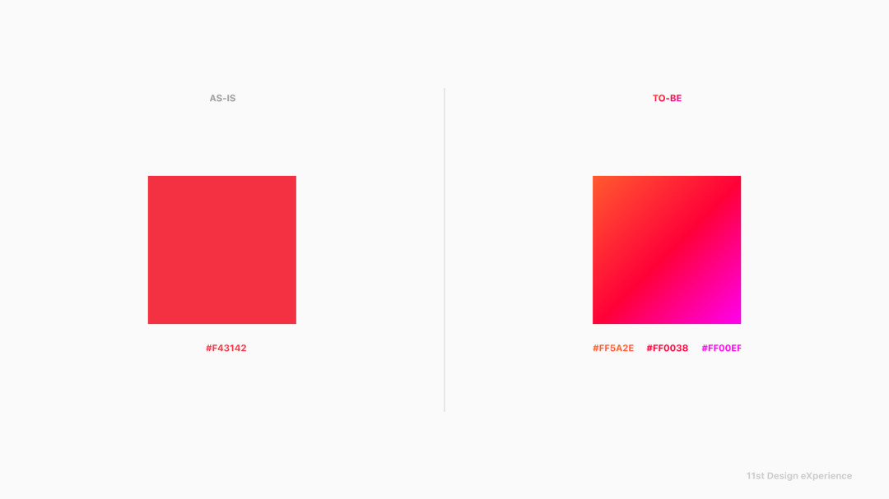
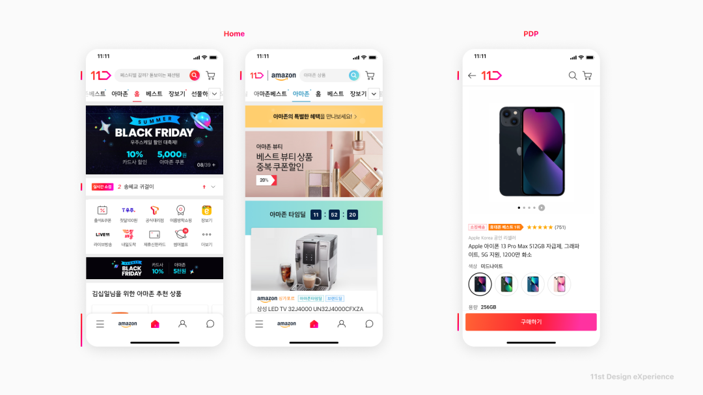
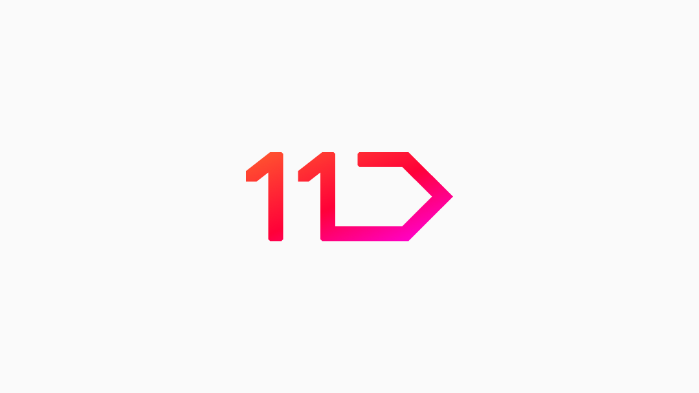

11STREET Design eXperience
/ 11번가 브랜딩 프로젝트는 기존 아이덴티티를 유지하면서도 컬러와 디자인 요소를 재정의해 단순하고 일관된 브랜드 경험을 구축한 작업이에요.
/ 디자인 시스템 3.0을 기반으로 로고·UI·프로모션까지 전사적으로 확장해 고객 쇼핑 경험을 하나의 연결된 브랜드 경험으로 통합했어요.

Brand Evolution — 최소한의 변화로 시대를 반영. 11번가 브랜딩 프로젝트는 기존 아이덴티티의 형태를 유지하면서도 시대 흐름에 맞는 변화를 더하는 방향으로 진행됐어요. 업계가 복잡함에서 단순함으로 이동하는 흐름에 맞춰, 브랜드 컬러를 재정의하고 시각 요소를 정돈했어요. 아이콘·엠블럼·쿠폰 등 복잡했던 디자인 요소를 단순화해 쇼핑 경험에 생기를 더하고, 고객과 상품 경험이 자연스럽게 연결되도록 설계했어요.

Color System — 강렬하고 일관된 브랜드 컬러 체계 구축. 디자인 시스템 3.0에서는 브랜드 컬러를 명확히 재정의했어요. Key Color로 #FF0038을 중심에 두고, Sub Color #FF5A2E, #FF00EF를 함께 구성해 시각적 에너지를 강화했어요. 컬러는 단순한 장식이 아니라 브랜드 경험을 통합하는 핵심 언어로 설정됐고, 앱·프로모션·외부 채널까지 일관되게 확장되도록 설계했어요.

Design System 3.0 — UI 전반의 구조적 정비. Color, Iconography, Button, Tabs, Navigation(GNB), Micro Interactions 등 UI 핵심 요소를 전면 재정비했어요. 파편화되어 있던 컴포넌트를 통합해 일관성을 확보하고, 쇼핑 여정 전반에서 동일한 경험 톤을 유지하도록 개선했어요. 이는 단순한 리디자인이 아니라, 브랜드와 제품 경험을 하나의 시스템으로 연결하는 작업이었어요.

Brand Touchpoint — 전사 적용과 단계적 확산 전략. 브랜드 로고와 앱 로고, 스플래시 화면, 외부 채널까지 단계적으로 적용 범위를 확장했어요. 22년 3Q~4Q에 디자인 시스템을 우선 적용하고, 이후 프로모션·엠블럼·브랜드 사이트까지 확장하는 순차 전략을 택했어요. 장기적으로는 브랜드 사이트를 통해 내부 진행 업무를 외부에 공개하며 디자인 시스템 운영 철학까지 공유하는 구조로 계획됐어요.